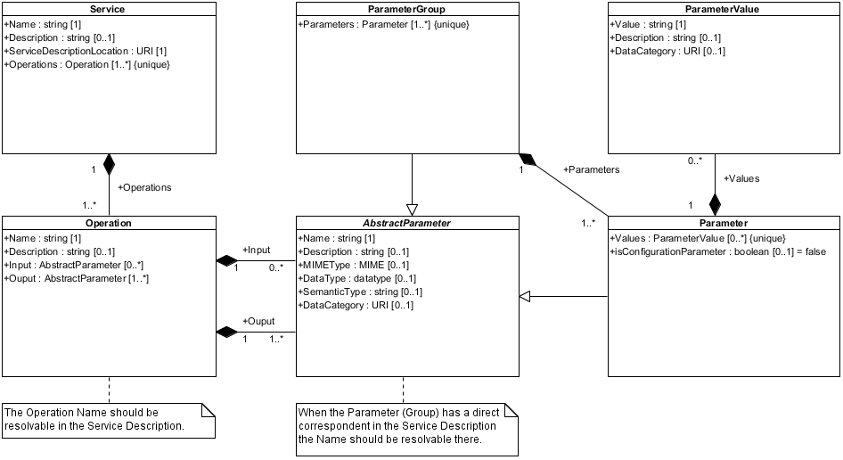

Within the CLARIN infrastructure a growing number of web services is becoming available. To answer linguistic research questions advanced workflows of these services will be created. Various national CLARIN initiatives are using or building workflow engines to specify and execute these workflows. In general these workflow engines execute web services based on metadata stored in an engine specific repository. This core CMD model for CLARIN web service descriptions is based on the overlap between the metadata schemes of these repositories.

( View the UML model as SVG, EMF, JPEG, PNG or PDF )
{kind=link}
{kind=link}
{kind=link}
Based on this UML model a CMD profile has been created. However, notice as CMD doesn't support object oriented features like abstract classes and inheritance this profile isn't a one-to-one transformation.
( View the CMD profile in the registry or download the profile as XML or XSD )
Notes:
- In an instance of the UML model Parameter and ParameterGroup instances would me able to mix in the Input, Output and Parameters lists, but in the CMD model ParameterGroup instances have to precede Parameter instances
- In the CMD model ServiceDescriptionLocation is a component instead of an element to enable the use of a CMD ResourceProxy to point to the WSDL or WADL file
A web service repository shouldn't directly offer its services in instances of the core model. Instead a repository specific profile should be created. This repository specific profile can extend the core model, e.g., it can add additional CMD elements and components. This can be done by editing copies of the components of the core model. The current versions of the core components are in the $group$ group in the $space$ space in the ComponentRegistry.
The following public CMD profiles are valid extensions to the core model and are or will be used by CLARIN web service registries, workflow and/or chaining engines:
- ToolService - CLARIN-NL Tool/Service descr - version 1.0
- CMD profile in use within CLARIN-NL/VL and to be used within the TTNWW project.
- ToolService - CLARIN-NL Tool/Service descr - DANS - version 1.0
- DANS version of the CLARIN-NL/VL ToolService profile, which allows an optional instance of the DANS-DC-metadata component.
- WebLichtWebService - NaLiDa
- From version 2.0 on CLARIN-D's WebLicht supports the CMD core model for CLARIN Web Services. A dedicated online editor has been created and is available to CLARIN-D developers (look in the archive or ask on the CLARIN-D developers mailinglist if you don't know the credentials).
Notes:
- Notice that the profile name can be different from the core profile, e.g., ToolService, as the associated element name will be skipped during validation.
When an instance of the repository specific profile is stripped of all the extensions it should still be a valid instance of the core model. This validation can be done by uploading the instance using the form below.
This example shows how the CLARIN-NL repository specific ToolService profile has been created. This profile mainly adds the TechnicalMetadata component to the Parameter component of the core model.
- Add the TechnicalMetadata component to the core Parameter component:
- Open the core Parameter component in the editor
- Change the group name of the component, so you can find the edited component back
- Do not change the component name, as that will change the element names and make the instances invalid!
- Add the TechnicalMetadata component
- Save the edited Parameter component in your own workspace (see
- Recusively update each component that refers to an updated component:
- Update the ParameterGroup component:
- Open the core ParameterGroup component in the editor
- Change the group name of the component, so you can find the edited component back
- Do not change the component name, as that will change the element names and make the instanced invalid!
- Replace the Parameter component by the edited Parameter component from your own workspace
- Recreate the cardinality constraints so they stay valid in the core model, i.e., you can have a lower maximum cardinality but not a lower minimum cardinality!
- Save the edited ParameterGroup component in your own workspace
- Update the Operation component:
- Open the core Operation component in the editor
- Change the group name of the component, so you can find the edited component back
- Do not change the component name, as that will change the element names and make the instanced invalid!
- Replace the Parameter and ParameterGroup components by the edited Parameter and ParameterGroup components from your own workspace
- Recreate the cardinality constraints so they stay valid in the core model, i.e., you can have a lower maximum cardinality but not a lower minimum cardinality!
- Save the edited Operation component in your own workspace
- Update the Service component:
- Open the core Service component in the editor
- Change the group name of the component, so you can find the edited component back
- Do not change the component name, as that will change the element names and make the instanced invalid!
- Replace the Operation component by the edited Operation components from your own workspace
- Recreate the cardinality constraints so they stay valid in the core model, i.e., you can have a lower maximum cardinality but not a lower minimum cardinality!
- Save the edited Service component in your own workspace
- Update the ParameterGroup component:
- Create your own profile which uses the Service component from your own workspace
- Check if an instance of your profile is also a valid instance of the core model:
- Create a valid instance based on the schema of your own profile
- Validate the instance also against the core model using the form above
The results of the CLARIN-NL Adelheid project has been described using this ToolService profile and is thus also a valid instantiation of the core model:
- CMDI metadata file: http://catalog.clarin.eu/metadata/cmdi/services/Adelheid.cmdi
- referenced WADL files:
- adelheid/main: http://catalog.clarin.eu/adelheidws/wadl/main.wadl
- adelheid/lexicon: http://catalog.clarin.eu/adelheidws/wadl/lexicon.wadl
- adelheid/tokenizer: http://catalog.clarin.eu/adelheidws/wadl/tokenizer.wadl
Notes:
- The links in the example above are based on version 1.0.1 of the core model and version 1.0.0 of the ToolService profile.
- Why do we need a technical service description, e.g., a WADL or WSDL file, next to the CMD metadata to fully document a web service?
-
The CMD metadata for web services focusses on the semantic description of a service, i.e., what goes in and what comes out, but it doesn't specifiy how to technically invoke the web service. Should you, for example, pass on the parameters into the query string and use the GET HTTP verb to invoke the service and receive the result? Or should one do a multi-part POST? Or should one wrap the input in a SOAP envelope and POST it to the web service? One could extend the core model to make this explicit, but there are already many of these proposals, e.g., WSDL and WADL, which can be reused. To invoke aribtrary web services a workflow or chaining engine needs to know this. For a more in-depth discussion see the Metadata2012 paper on the core model.
- The core model doesn't prescribe a technical service description language or Interface Definition Language (IDL), why not?
-
For SOAP web services there is a standard, i.e., WSDL (2), but for REST-based web services there isn't. Sun submitted WADL some years ago, but it never made it to a recommendation. So currently there are several competing proposals:
- WSDL 2 also supports HTTP bindings
- WADL (W3C submission)
- Home Documents for HTTP APIs (IETF draft)
- RESTdesc
- RESTful Service Description Language (RSDL)
- ... (please contact me to add other alternatives)
- M. Windhouwer, D. Broeder, D. van Uytvanck. A CMD Core Model for CLARIN Web Services. In the Proceedings of the Metadata2012 Workshop on Describing Language Resources with Metadata: Towards Flexibility and Interoperability in the Documentation of Language Resources. At LREC 2012, Istanbul, Turkey, May 22, 2012. (SlideShare)
For any additional information feel free to contact:
 Menzo Windhouwer (CLARIN ERIC/Meertens Institute)
Menzo Windhouwer (CLARIN ERIC/Meertens Institute)
This core CMD model is based on information provided by and feedback from:
- Marc Kemps-Snijders (Meertens Institute)
- Marta Villegas (Universitat Pompeu Fabra)
- Thomas Zastrow (University of Tübingen)
[2017-08-17] this page
- Updated various links
- Prepare move from MPI to CLARIN
[2011-12-19] CLARIN core WS descr - version 1.0.1
- Inplace update of the component to allow multilingual descriptions
[2011-11-16] CLARIN core WS descr - version 1.0
- The CoreVersion attribute on the Service component now indicates the version (currently 1.0) of the core model that is instantiated
- Location attribute has been renamed to ServiceDescriptionLocation to indicate that it should point to a WSDL or WADL description of the service(s)
- ServiceDescriptionLocation is realised as a CMD component to enable the use of a CMD resource proxy for the URI of the WSDL or WADL document
- Recipe attribute has been removed as the ServiceDescriptionLocation now points to a machine readable recipe, i.e., a WSDL or WADL file, to invoke a service
- Name attribute of the AbstractParameter class should point to a parameter described in the WSDL or WADL file if the Parameter(Group) has a direct correspondent
- Name attribute of the Operation class should point to a service described in the WSDL or WADL file
- SemanticType attribute has been added to the AsbtractParameter class to fine tune output/input parameter matching
- DataCategory attribute has moved to the AbstractParameter class to allow references to container data categories from ParameterGroup
[2011-08-08] CLARIN core WS descr (tentative)
- Tentative release of the profile and components